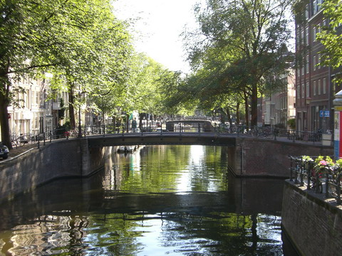
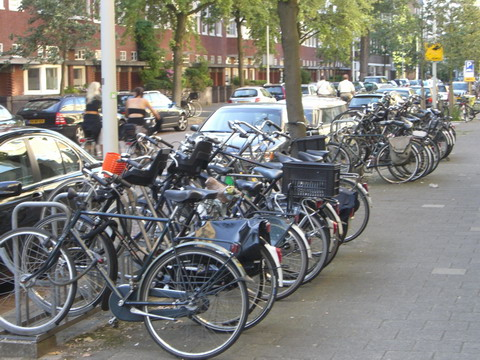
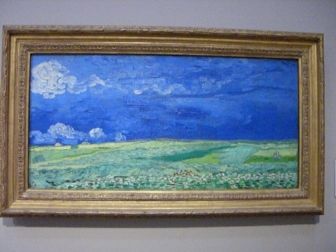
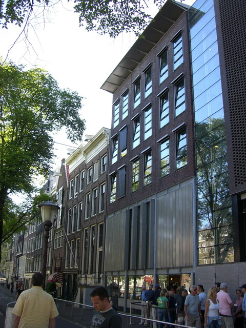

the netherlands
amsterdam

we had a few days in amsterdam. was just as we expected with lot of bikes crossing lots of canels.

did someone mention bikes? there are sooooo many in amsterdam.

dropped in to see a few museums including the van gogh one which had surprisingly few van goghs!

also visited anne franks house, though it's changed a bit since the war. extremely eerie...